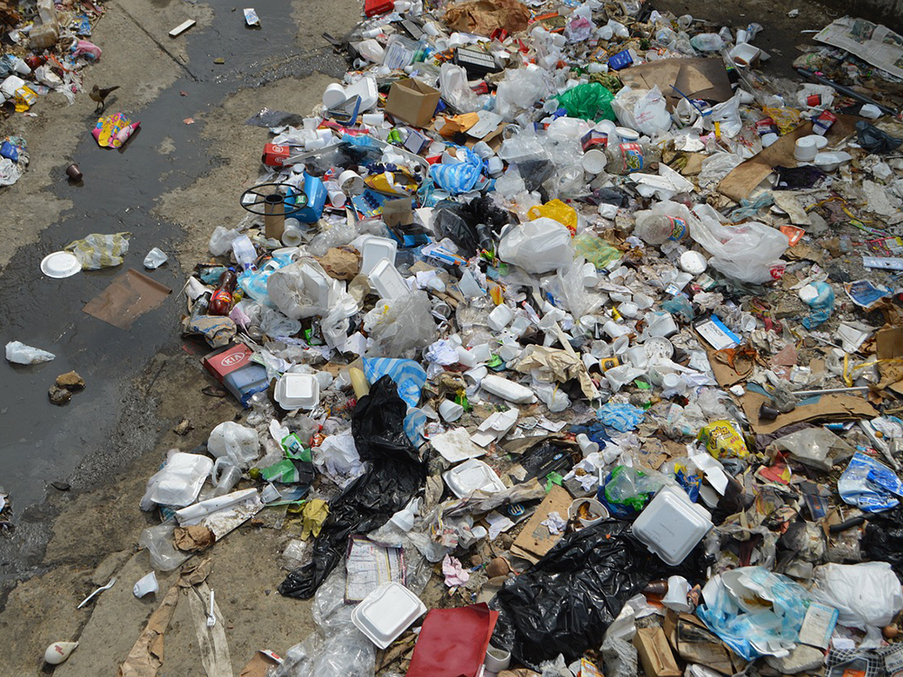

Home
Projetos
Parcerias
Sobre Nós
Cadastrar
Santo Expedito

Reduzir a produção de resíduos, ampliar o aproveitamento de materiais recicláveis e orgânicos, bem como multiplicar ações de educação ambiental para alunos e toda a comunidade são alguns dos objetivos do Projeto Lixo Zero implementado inicialmente em duas escolas do município: E.M Renata Castilho, no Saco da Ribeira, e E.M Manoel Inocêncio, no Sertão do Ubatumirim.
A ONG Futuro Verde é composta por um grupo de pessoas apaixonadas pela natureza e engajadas em construir um futuro mais sustentável para todos. Essa equipe dedicada tem desenvolvido uma série de atividades e projetos em nossa comunidade, buscando educar, inspirar e envolver todos os cidadãos em prol do meio ambiente.
Por meio do programa, serão promovidas ações de educação ambiental, coleta seletiva, oficinas, palestras, instalação de composteira, entre outras atividades que buscam capacitar alunos e professores, que se tornarão multiplicadores de conhecimento na comunidade escolar e no entorno da unidade..
Além disso, o Projeto Futuro Verde tem trabalhado em parceria com escolas locais, implementando programas de educação ambiental. As crianças são o futuro de nossa cidade e, ao educá-las sobre a importância da preservação ambiental desde cedo, estamos criando uma geração consciente e engajada em cuidar da natureza. São realizadas atividades práticas, como plantio de árvores, hortas escolares e visitas a áreas de preservação, para despertar o amor e o respeito pela natureza em nossos jovens.
Outro projeto notável é a criação de áreas verdes urbanas. O Projeto Futuro Verde tem liderado esforços para transformar espaços públicos ociosos em jardins e praças arborizadas. Além de embelezar a cidade, essas áreas proporcionam sombra, purificam o ar e servem como refúgio para a fauna local. Esses espaços verdes se tornam verdadeiros oásis no meio do concreto, incentivando a conexão da população com a natureza.
Redes sociais